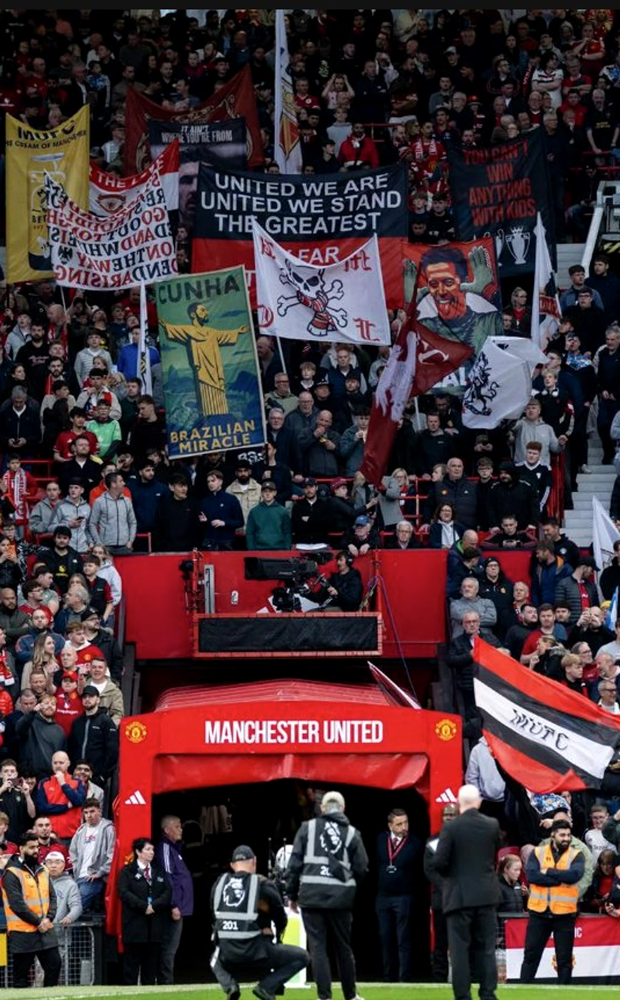
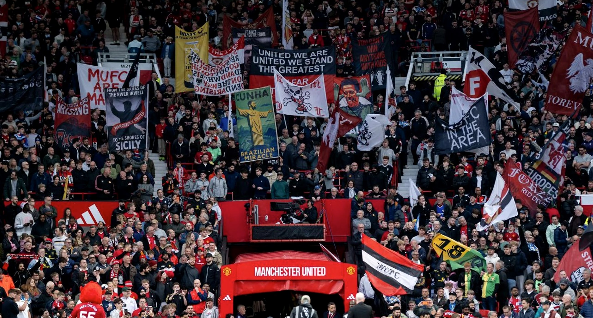
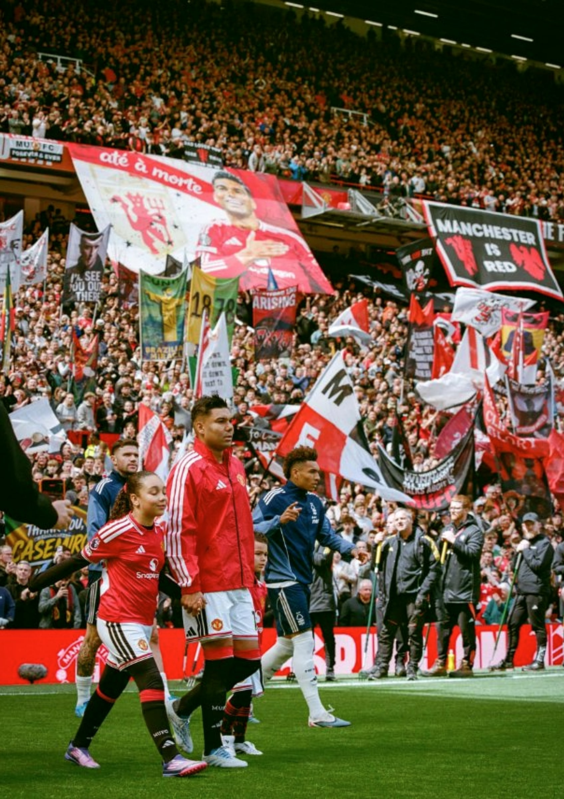
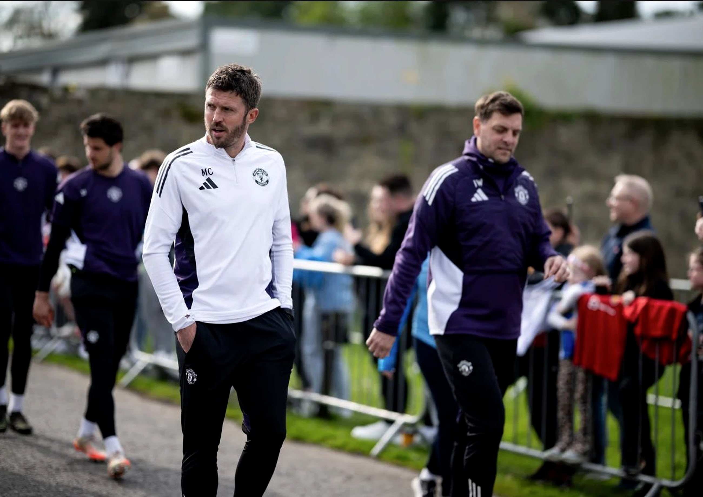
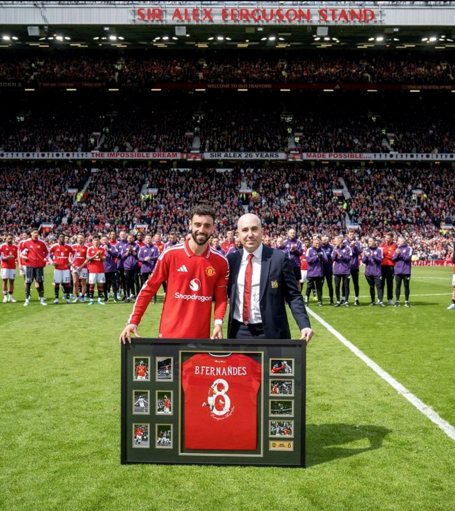
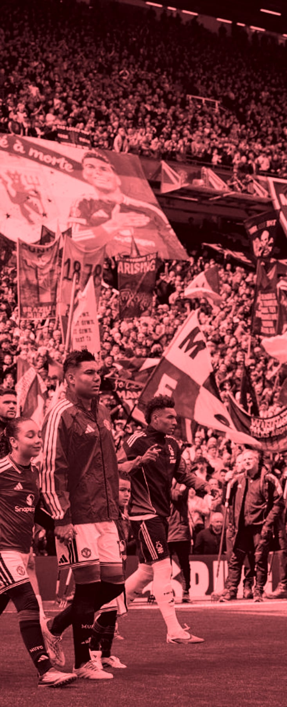

The collapse of 2024 – 25. Casemiro’s long goodbye. Carrick’s miracle run. And a captain who broke a record that stood for twenty-three years.
“Just when the anger had curdled into something permanent, they pulled you back.”
Another season. Another emotional battering. Another reason never to stop watching. I have supported this club long enough to know that Manchester United never does anything quietly.
The 2024 – 25 campaign was supposed to be the rebuilding year. Instead it became something worse. Fifteenth place. Forty-four goals. Three managers in a single calendar year.
And yet here we are. Twelve months later, talking about Champions League football, a manager who has his players running through walls, and a captain who just broke a twenty-three-year-old Premier League record.
That is what this club does to you. Just when the anger has curdled into something permanent, they pull you back. Red Chapters exists because stories like this deserve more than a tweet. They deserve proper journalism. Proper opinions — including the uncomfortable ones.
Glory Glory.
The Editor
Red Chapters · redchapters.co

Manchester United spent over £200m in the summer of 2024. By October the manager was gone. By May they were fifteenth — the worst season in the club’s history.
Erik ten Hag had just won the FA Cup and the board backed him properly. Zirkzee arrived from Bologna for £37m. Yoro came from Lille — then immediately broke down injured.
De Ligt and Mazraoui followed from Bayern. Ugarte from PSG for £51m on deadline day. On paper it looked serious. In practice nothing clicked. Zirkzee was creative but lightweight. De Ligt never settled.
West Ham. The twenty-seventh of October. Bowen stepped up in the ninety-third minute and finished into the far corner. Two–one. United’s fourth loss in nine games. Fourteenth place.
The next morning Ten Hag was gone. Nobody saw it coming quite like this. The board had questions to answer about how much was the manager and how much was the squad.
Ruben Amorim arrived from Sporting CP with real credibility. His 3-4-3 demanded wing-backs with genuine pace. United had none. Rashford was loaned to Aston Villa, Antony to Real Betis.
In May, United lost the Europa League final to Tottenham. Two clubs from the bottom half of the table contesting a European final. Fifteenth in the league. The worst season in the club’s history.

The rise. The decline. And a standing ovation that lasted eighty-one minutes.
Old Trafford · May 2026 — Casemiro leads the team out for the last time as a United player.
When Casemiro arrived from Real Madrid in 2022 for £70m, people said it was too much. Those people were wrong for eighteen months. He was everything United’s midfield had been missing — physical, ruthless, intelligent.
Then the decline arrived. With United two–nil down at half-time to Liverpool, Ten Hag took him off at the break. His replacement was Toby Collyer, nineteen years old, making his Premier League debut. It was not a subtle message.
What happened under Carrick was something none of us expected. Seven Premier League goals in 2025 – 26, from a midfielder written off six months earlier. On the final home day, Old Trafford sang his name for eighty-one minutes. He waved to all four stands.
Old Trafford has said goodbye to many great players. Few have earned a send-off quite like this one.
“Old Trafford sang his name for eighty-one minutes.”

Sixteen games. Eleven wins. Champions League football. One of the most remarkable runs in the club’s recent history — and nobody saw it coming.
Carrington · January 2026 — Carrick arrives for training the week he took the job.
He played four hundred and sixty-four times for this club. Five Premier League titles, a Champions League, an FA Cup. After Middlesbrough and a return as under-18 coach, the call came in January 2026. Amorim was gone. Carrick walked back through the doors.
His first game was the Manchester derby. Mbeumo opened on the counter. Dorgu made it two. United won two–nil. The following week he took them to Arsenal, top of the league, and Cunha scored the winner in the final minutes. Nobody saw it coming.
In sixteen league games he won eleven, drew three, lost two. “We want to die for him on the pitch,” said Kobbie Mainoo. Champions League was sealed against Liverpool in March — Mainoo sliding it home in the eighty-eighth minute. Old Trafford shook.
Carrick gets the permanent job before pre-season. United challenge for the top two in 2026 – 27. The rebuild is his.

The all-time Premier League record. Better than Henry. Better than De Bruyne.
Old Trafford · May 2026 — Bruno receives the framed shirt marking his twenty-first assist.
The record had stood for twenty-three years. Thierry Henry set it with Arsenal’s Invincibles in 2002 – 03. Kevin De Bruyne matched it in 2019 – 20 with City. Twenty assists — a ceiling that looked unbreakable.
Bruno Fernandes broke it on the final day at Brighton. He arrived at this club in January 2020 and has not had a bad season since. Not one.
Is he United’s greatest Premier League player? There is a genuine argument. For sustained, consistent quality across six years, Bruno Fernandes has no equal at this club.
Most Assists · A Single PL Season — the three highest tallies in Premier League history.
He arrived in January 2020 and has not had a bad season since. Not one.
Zirkzee opens his account. This was supposed to be the start of something.
Casemiro hauled off at half-time. The writing was already on the wall.
Mbeumo announces himself. United fans finally had a new hero.
Cunha scores his first United goal. Back-to-back wins under Amorim.
Bowen, ninety-plus-three. Ten Hag sacked the next morning. The end of an era.
Carrick’s debut. A perfect start. Old Trafford believes again.
Cunha’s winner away at the league leaders. Nobody saw it coming.
The one blip. A reminder this team is still a work in progress.
Mainoo seals it. Champions League football is confirmed.
Bruno’s twenty-first assist. Third place. The season ends in joy.
United spent nearly £190m on forwards in the summer of 2025. For once, it worked.
Took time to settle, but devastating once he clicked. The striker United have missed since Van Nistelrooy.
Hit the ground running from day one. Intelligent, hard-working, clinical. The signing of the summer.
The most creative of the three. Every goal looks designed in advance. A joy to watch.
| Pos | Club | P | Pts | Status |
|---|---|---|---|---|
| 1 | Arsenal | 38 | 82 | UCL |
| 2 | Manchester City | 38 | 74 | UCL |
| 3 | Manchester United | 38 | 71 | UCL |
| 4 | Liverpool | 38 | 69 | UCL |
| 5 | Chelsea | 38 | 66 | UEL |
| 6 | Newcastle | 38 | 63 | UEL |
“This football club never stops. You feel it every single day.” Michael Carrick · May 2026
Amorim’s 3-4-3 had failed because it demanded wing-backs United did not own. Carrick kept the back three but changed everything in front of it.
The two pivots — Mainoo and Ugarte — sat deep and screened the defence, freeing the wing-backs to push high and give the width the front three needed.
Šeško led the line. Mbeumo and Cunha drifted inside off both flanks, overloading the half-spaces. Suddenly the same formation that had United fifteenth was carrying them to third.
Six bold calls for the season ahead. Argued, not hedged.
Confirmed before pre-season. The results make him impossible to ignore.
The front three is set. A cover striker and a full pre-season change everything.
He is thirty-one and playing the best football of his life. He extends. He finishes here.
Eleven in his debut season. Year two under Carrick takes him past twenty.
The return is huge. The crowd, the history, the aura. Quarter-finals minimum.
Year one was chaos. Year two recovery. Year three a challenge. Arsenal will not enjoy it.

The complete story of the 1999 Treble — the greatest season in English football.
Photo — Manchester United walk out at Old Trafford · 2025 – 26.